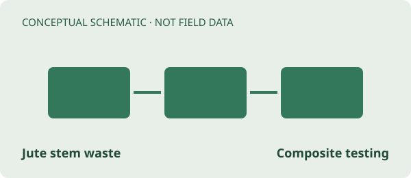
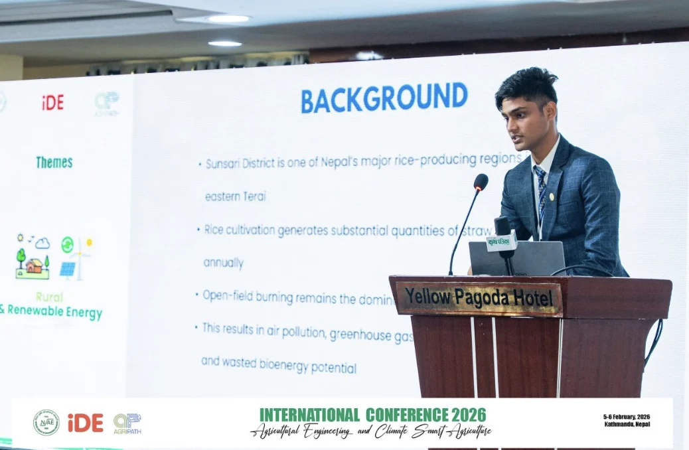

I studied agricultural engineering at the Institute of Engineering, Tribhuvan University (2022–2026), with a merit-based full scholarship. My undergraduate research explored biodegradable cushioning composites made from jute stem waste. I have worked on hydrological field surveys and drip irrigation design and installation.
Current work: Agricultural Engineering Intern, Nepal Thopo Sinchai (as stated in the supplied CV).
02 / SELECTED WORK
Research & field projects
Four case studies drawn from my research, fieldwork and published output.
Field photograph supplied for the Solukhumbu orchard irrigation project.
CASE 01 / Drip irrigation · Solukhumbu
3,500+ apple plants covered
Problem
Water delivery for a hill-region apple farm.
Approach
Drip irrigation system design and field installation.
My role
Designed and installed the system during the Nepal Thopo Sinchai internship.
Results
20 ropani covered; more than 3,500 apple plants.
Takeaway
Field-scale irrigation design connects engineering to farm operations.
Conceptual diagram, not measured data.
CASE 02 / Watershed hydrology · Kathmandu Valley
Three decades of flood impacts reviewed
Problem
Understanding long-term river dynamics and flood risk.
Approach
Literature review, historical data analysis, groundwater measurements, geospatial surveys and SonTek FlowTracker2 ADV discharge measurements.
My role
Conducted surveys and evaluated mobile discharge measurement applications; assisted data analysis.
Results
Three decades of flood impacts reviewed.
Takeaway
Field observations and historical records complement watershed assessment.

Conceptual diagram of the research approach, not experimental data.
CASE 03 / Jute stem waste · Bachelor’s thesis
Three composite batches investigated
Problem
Agricultural residues and conventional expanded polystyrene packaging.
Approach
Jute stem residue and corn flour binder; three batch formulations, laboratory-scale fabrication, physical and mechanical characterization, and a soil-burial biodegradation framework.
My role
Developed formulations, optimized manufacturing parameters and performed statistical analysis.
Results
The thesis document describes three batches, 150 × 150 × 25 mm panels and a 90-day soil-burial assessment framework. Numerical experimental outcomes are not reported in the supplied document.
Takeaway
Agricultural biomass can be investigated as a resource for circular material systems.
Conceptual diagram, not measured data.
CASE 04 / Crop–energy co-production
Systematic review published in 2026
Problem
Integration of agricultural production and renewable energy systems.
Approach
Systematic review of AI-driven optimization in agrophotovoltaic and bioenergy-integrated systems.
My role
Co-author of the published review.
Results
Published in EGNES 5(2), 69–74.
Takeaway
Crop–energy integration is a research direction at the intersection of agricultural and energy engineering.
03 / RESEARCH DIRECTION
Research statement
Research directions based on my stated research interests.
How can irrigation and nutrient management be designed to support soil health and productive cropping systems while responding to changing water availability? I would like to investigate field measurements, hydrological data and geospatial assessment as complementary methods for understanding agricultural water and watershed systems.
Another direction is the valorization of agricultural biomass through circular material and energy systems. Questions include how to evaluate resource efficiency and material performance, and how farmer engagement and social inclusion can inform the adoption of sustainable agricultural practices.
04 / BACKGROUND
Experience & education
Agricultural Engineering Intern
Nepal Thopo Sinchai · Chitwan
Drip irrigation installation, agricultural plastics production supervision, greenhouse and solar dryer design estimates.
Research Intern
Smartphone4water Nepal · Lalitpur
River-system literature review, hydrological field surveys and discharge measurement.
Undergraduate Research Assistant
Department of Agricultural Engineering, IOE · Dharan
Jute composite formulation, laboratory testing and analysis.
Local Director
IAAS Nepal LC ERC
Chapter coordination, workshops, seminars and agricultural outreach.
Executive Member
NAESS
Technical events and student engagement.
B.E. Agricultural Engineering
Institute of Engineering, Tribhuvan University · Dharan
Merit-based full scholarship, 2022–2026.
Higher Secondary Education (Science)
Premier College · Kathmandu
05 / SCHOLARLY OUTPUT
Publications & presentations
JOURNAL ARTICLE / 2026
Pandey, A., Bhattarai, D., Karna, D., & Bista, E. (2026). Artificial intelligence-driven optimization of agrophotovoltaic and bioenergy-integrated crop–energy co-production systems: A systematic review. Economic Growth and Environment Sustainability (EGNES), 5(2), 69–74.
Pandey, A. (2026). Utilization of crop residue for renewable energy production and circular economy in agriculture: A case study in Sunsari District. International Conference on Agricultural Engineering and Climate Smart Agriculture, NSAE, Kathmandu.

International Conference on Agricultural Engineering and Climate Smart Agriculture, Kathmandu, 5–6 February 2026.BACHELOR’S THESIS
Development and Feasibility Evaluation of Jute Stem Waste-Based Cushioning Composite for Eco Packaging Applications.
Undergraduate research · experimental methodology and feasibility framework.
06 / METHODS
Technical skills
Water & geospatial
SonTek FlowTracker2 ADV, groundwater level measurements and geospatial data collection — Kathmandu Valley field surveys.
Drip irrigation design and estimation — Solukhumbu apple farm.
GIS and remote sensing — watershed assessment interest.
Materials & experimentation
Sample formulation, mechanical testing, density, water absorption, impact resistance and biodegradability — jute composite thesis.
UTM, compression testing and other lab instruments listed in CV.
Data & communication
Statistical analysis — jute composite research. Literature review and data interpretation — Kathmandu Valley hydrology.
R, advanced Excel, ANOVA and regression listed in CV.
Scientific writing and oral presentation — published review and NSAE conference abstract.
Training
R for Data Science — Cognitive Class
Fundamentals of Remote Sensing — NASA ARSET
Fundamentals of Research Methodology — Department of Agricultural Engineering, IOE Purwanchal Campus
07 / CONNECT
Contact
For academic and professional inquiries, reach me by email.